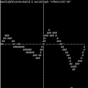
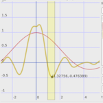

Demos
We have packaged several demo applications with the source code to show some potential uses. These are all available in the src/demos directory and include:
- asciiGraph (.mov), a simple ASCII graphing calculator
 - segraph (.mov), a Qt graphing calculator
 - shadeop (.mov), a RenderMan shader and shadeop

Artistic control is very important for film making. Expressions though essentially a mathematical concept can readily be used to create artist directed procedural content.
One key we found was creating an interface around the expression language that automatically exposed parameters on defined variables.
We have included in src/demos a simple Qt image editor (.mov) to illustrate this functionality.
In the example, you can see a color ramp, slider, and spline ramp that are all automatically generated from just typing the expression below the widgets.
Also, libraries of expressions can be created by expert users and shared with other users. Take a look at our expression library (.mov) in action.
Another demonstration of the expression editor can be seen in this video (YouTube) at time 3:18.